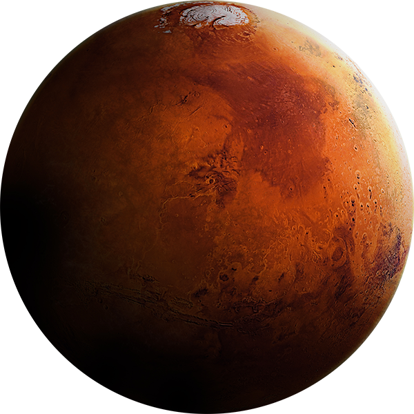
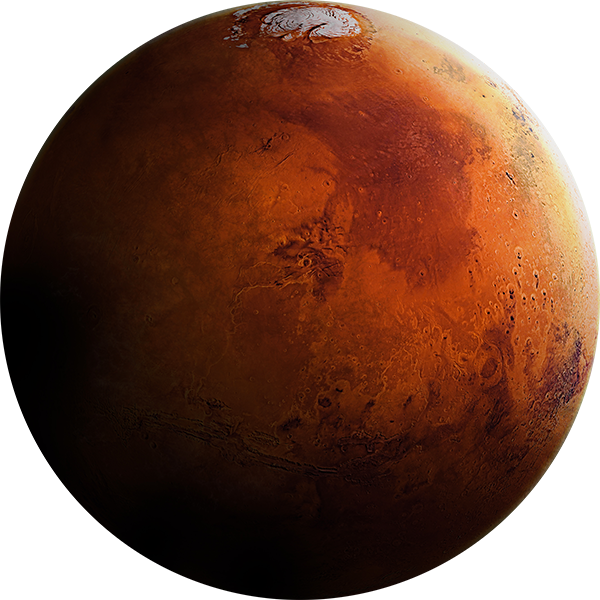
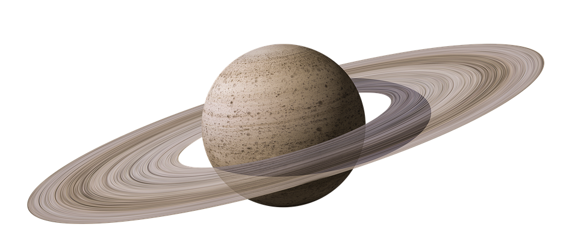
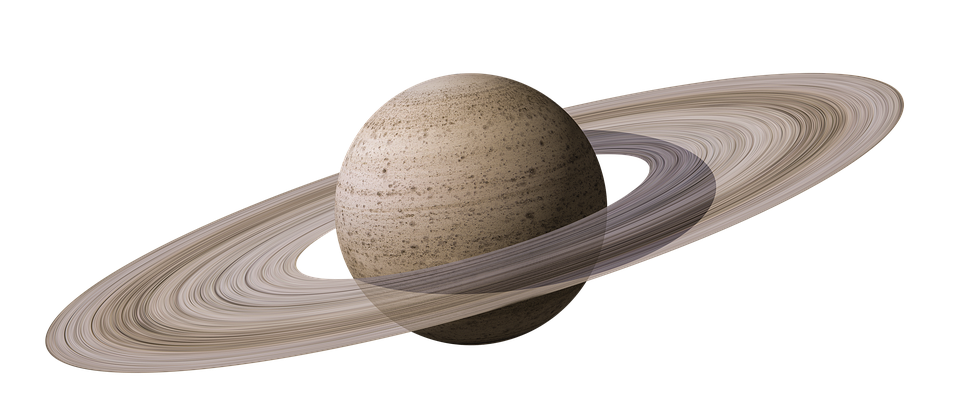

Le Système solaire est le nom donné à notre système planétaire, composé du Soleil et de l'ensemble
des objets célestes qui l'accompagnent et qui tournent autour de lui. Ceci inclut les planètes, leurs satellites, les astéroïdes,
les comètes (ainsi que des gaz et des poussières, dits matériaux inter-planétaires).
Le Soleil est la seule étoile de notre système solaire, sa lumière et sa chaleur constante permettent la vie sur Terre.
Parfois, le Soleil envoie des jets de gaz brûlant dans l'espace : ce sont des éruptions solaires.
Diamètre :
1,4 million de kilomètres.
Distance à la Terre :
150 millions de kilomètres, la lumière du soleil met 8 minutes à parvenir jusqu'à nous.
Température : 15 millions de degrés (à son coeur)
Mercure est la planète la plus proche du Soleil, elle tourne autour de lui en 88 jours.
Elle est plus petite
que la Terre et sa surface ressemble à celle de la Lune.
Température : Il peut faire très chaud sur Mercure :
jusqu'à 430°C mais aussi très froid : -170°C.
Connaissance : On connaît mal Mercure du fait qu'aucune sonde
ne s'y est jamais posée : seul un de ses côtés à déjâ pu être photographié.
Venus est une planète rocheuse, elle a presque la même taille que la Terre et ses paysages sont surtout
plats avec quelques régions montagneuses.
C'est la planète la plus volumineuse du système solaire. On la voit briller toute l'année. Elle
est appelée "L'étoile du Berger".
Vénus prend 243 jours pour tourner sur elle-même (1 jour pour la Terre) et met 224 jours
pour tourner autour du Soleil (365 jours pour la Terre).
Vénus est une planète hostile, son atmosphère est composée de gaz carbonique
et ses nuages l'entourant rendant possible l'observation de sa surface uniquement par sonde sont composés d'acide.
Diamètre :
12.104km
Distance du Soleil : 108 millions de kilomètres.
La Terre ou "planète bleue" est la seule planète du système solaire où la vie est connue.
Vue de l'espace,
la Terre paraît bleue. C'est dû en partie aux océans, qui couvrent presque les trois quarts de la surface terrestre. Mais c'est
surtout à cause de l'atmosphère qui renvoie la lumière bleue des rayons solaires.
La terre est formée de 4 couches principales :
- la croûte : mince couche rocheuse épaisse de 6 à 40km
- le manteau : épais d'environ 2800km
- le noyau externe : composé
de métaux en fusions épais de 2300km
- le noyau interne : large d'environ 2400km
Diamètre :
12.700km
L'atmosphère : Cette couche de gaz, épaisse d'environ 500km, entoure la Terre.
Elle permet aux êtres vivants de respirer et les protège des rayons du Soleil
Température : Il fait très froid sur Mars : 0°C le jour et jusqu'à -80°C la nuit(-125°C en hiver)
Mars possède deux petits satellites : Phobos et Deimos (27 et 15km de long).
Selon les savants, il y a longtemps, on trouvait des
rivières et des océans sur la planète. Mais l'eau liquide a disparu de sa surface. On ne voit plus aujourd'hui
que des traces sur le sol.
L'homme marchera un jour sur Mars. Mais le voyage est long et compliqué à organiser. Il faudra
plusieurs mois pour l'atteindre. Pour l'instant, on y envoie des sondes et des robots.
Volcan Géant : Le sol de Mars est couvert de volcans. Le mont Olympus est le plus gros. Il est presque aussi
étendu que la France. Le cratère principal se situe à 26km d'altitude. C'est 3 fois plus haut que l'Everest.
Jupiter est la plus grosse planète du système solaire. Elle est 11 fois plus large que la Terre.
Température du noyau : ~30.000°C
Avec un télescope, on peut voir depuis la Terre
des bandes sombres autour de Jupiter. Ce sont des nuages. Au sommet de ces nuages, la température est très froide.
Elle est d'environ -120°C.
Jupiter est entourée d'au moins 16 lunes. Ces lunes tournent autour de la planète,
comme la Lune tourne autour de la Terre. Les plus grandes lunes de Jupiter s'appellent Ganymède, Io, Europe et Callisto.
Saturne est la deuxième plus grosse planète du système solaire.
Elle est surtout formée d'hydrogène
liquide, d'hydrogène métallique et d'hélium, au centre se trouve un noyau rocheux.
Il fait très froid sur
Saturne : environ -150°C.
Anneaux de Saturne : Saturne est entourée d'anneaux. Ils sont formés de
milliards de blocs de glace et de roche.
C'est une planète qui possède de nombreux satellites. On en connaît une trentaine(Titan,Rhéa, Dioné, Phoebé...),
mais les astronomes pensent qu'il y en a beaucoup plus.
Titan : Titan est le plus
gros satellite de Saturne, il intéresse les scientifiques car son atmosphère ressemble un peu à celle de la
Terre avant l'apparition de la vie.
Les astronomes espèrent donc, en l'étudiant, mieux comprendre
comment la vie est apparue sur la Terre.
Uranus est la troisième plus grosse planète du système solaire, après Jupiter et
Saturne. On connaît très mal cette planète, car elle n'a été découverte par les savants qu'au
18e siècle.
Des anneaux : Uranus est entourée par plusieurs anneaux sombres,
difficiles à observer. Ils sont composés de roches et de poussières.
Vue de l'espace, Uranus présente une teinte bleu-vert. C'est un gaz de son atmosphère
qui lui donne cette couleur.
Inclinaison : L'axe de rotation d'Uranus est
très incliné. Par rapport aux autres planètes, Uranus semble être complétement penchée sur le côté.
Les Lunes : Uranus possède au moins 27 satelittes naturels. Les deux plus gros sont
Titania et Obéron.
Neptune est une planète composée surtout de gaz et de glaces. Elle est 57 fois plus grosse que la Terre.
Vents et nuages : Sur Neptune, des vents très violents peuvent souffler jusqu'à 2000km/h.
Des nuages se forment puis disparaissent assez rapidement dans l'atmosphère.
Très éloignée
du Soleil, Neptune est une planète très froide.
Les anneaux : En 1989, la sonde Voyager 2 a permis d'observer les anneaux
qui entourent Neptune.
Les savants pensent qu'ils sont formés de poussières et de glace.
Les lunes de Neptune : Neptune possède au moins 13 lunes. La plus grosse, Triton,
est l'un des astres les plus froids du système solaire.


 

 
